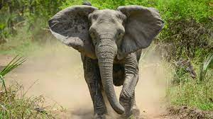

would you like to go on safari? The word means"journey" in Swahili, the language of east Africa. This word was later borrowed by wealthy travellers from Europe years ago, who the English language and the term "Big Five"came about.It refers to the five most dangerous animaals to hunt on safari.
So, what are the "Big Five"? The answer may surprise you.

They are big animals, weighing up to 6000 kilograms, But they can reach a speed of up to 40 kilometres per hour. Although they have poor eyesight, they must always be approached with caution.